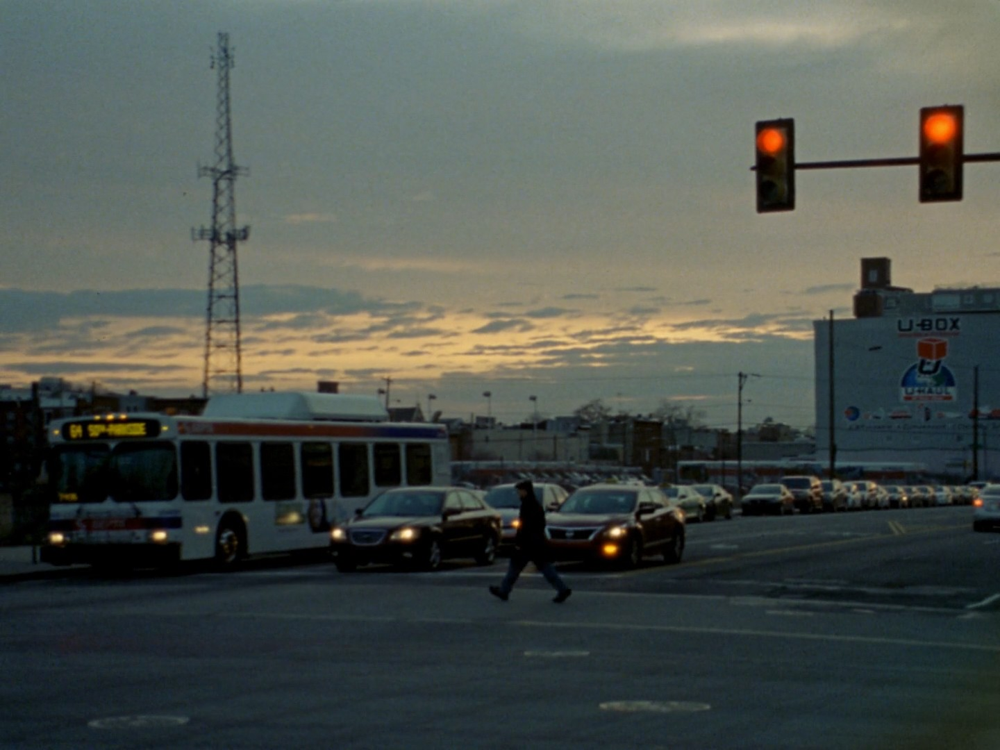
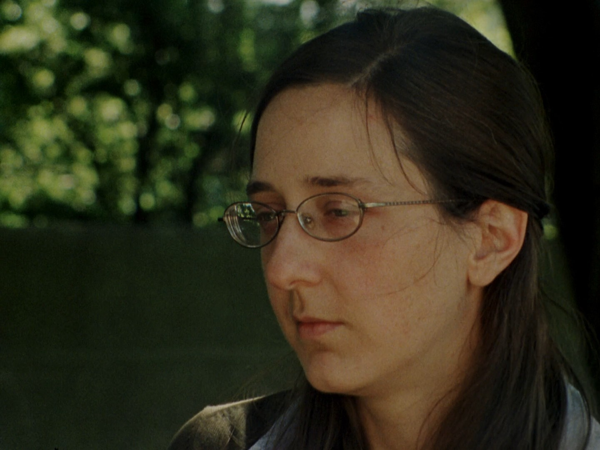
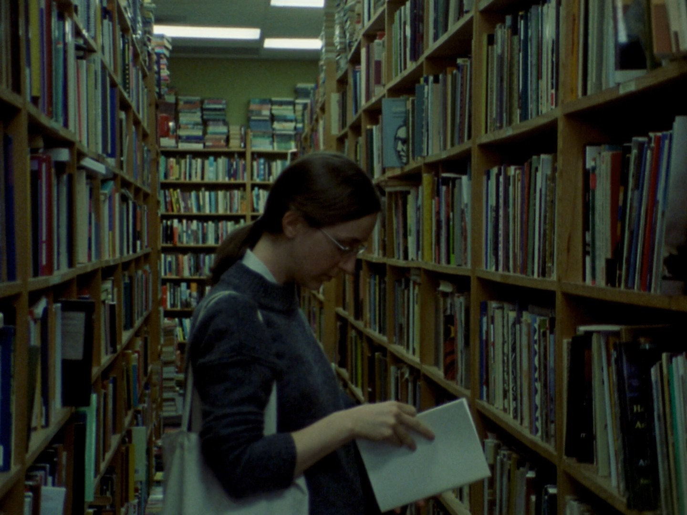

Ouvrier indépendant
Sur Classical Period de Ted Fendt
Texte publié dans la revue Débordements le 5 avril 2023
Cinéaste américain, né à Philadelphie en 1989, Ted Fendt est l’auteur de six films : trois courts (Broken Specs (2012), Travel Plans (2013), Going Out (2015)) et trois longs (Short Stay (2016), Classical Period (2018), Outside Noise (2021)). En plus de son attirance pour les titres de film à deux mots, il montre un attachement à la pellicule, et plus particulièrement au 16mm, dans lequel il a tourné toute son œuvre. Finançant lui-même ses films avec l’argent qu’il réussit à mettre de côté de ses activités de projectionniste et de traducteur (de Straub et Huillet, de Moullet, de Brenez), mentionnant, à la volée, Benning, Farocki, Michael Snow (entre autres) en interview, Ted Fendt est hautement « conscient » de son travail. Mais cette conscience, loin d’aboutir à une fixation sur certaines idées, à une position de démiurge, le conduit à une grande ouverture aux propositions venant de l’extérieur. Cal, Evelyn, Sam, Chris, personnages principaux de Classical Period (2018), sont des gens qu’il connaît et apprécie dans la vraie vie, et dont les histoires viennent irriguer le film.

Chaque personnage se meut dans sa propre singularité, possède une façon de parler et de se tenir entièrement différente des autres. Il s’agit là d’un parti pris du cinéaste, dont le travail avec les acteurs, tant au niveau de l’écriture des dialogues que des répétitions avec ceux-ci, consiste à laisser s’exprimer les attitudes et la prosodie de chacun plutôt que de lisser le ton du film pour viser à une unité d’ensemble.
Ainsi, pour écrire la scène du séminaire, il raconte s’être rendu dans un café avec Evelyn pour parler de la Divine Comédie, avoir pris en note les remarques qu’elle lui faisait, et a ensuite mis en forme celles-ci pour faire ressortir la manière de parler naturelle de l’actrice. Il n’y a pas d’improvisation, tous les dialogues sont écrits à l’avance. L’objectif de Fendt, sur le tournage, est de mettre à l’aise les acteurs et d’éviter qu’ils ne (sur)jouent, qu’ils ne cherchent à trop exprimer.
La comparaison que beaucoup font avec le cinéma de Straub et Huillet – faute d’autres références, celle-ci est de plus rendue facile par le fait que Fendt a supervisé la publication d’un livre sur le couple de cinéastes – ne tient pas très longtemps dès lors que l’on examine plus précisément le travail effectué sur le texte et les motivations qui sous-tendent les travaux respectifs des cinéastes. Là où Straub et Huillet cherchent à faire passer au spectateur, via leurs films, des œuvres venues d’autres domaines (la musique de Bach, les textes de Pavese ou de Vittorini, etc.), le travail de Ted Fendt est d’ordre tout à fait différent.
Il s’agit ici de transmettre au spectateur des choses qui intéressent les personnes participant au film (ici, la littérature et l’étude des classiques), et non les intérêts propres de Fendt (quand bien même il est lui aussi féru de littérature). C’est au fil de la réalisation du film, à mesure de discussions avec les participants, qu’ont surgi les éléments qui constituent le film ; la structure n’est pas définie à l’avance, mais se révèle organiquement pendant la préparation du film avec les acteurs. Ce « démocratisme » n’est pas sans rappeler la méthode utilisée par Rivette pour L’amour fou (Rivette préférait d’ailleurs se définir comme « metteur en scène » davantage que comme « réalisateur »).

La réflexion sur la littérature et l’étude de celle-ci comme des autres arts sont mis au premier plan dans Classical Period et forment le gros du film. Activité montrée dans le détail et en pleine longueur, la mise en scène de Fendt prend le contre-pied de l’habitude de considérer le discours littéraire comme une toile de fond explicative des personnages (par exemple chez Rohmer, chez qui le travail, bien que parfois montré, a toujours une place secondaire par rapport aux intrigues amoureuses ou aux aventures des personnages).
L’amour de la littérature est ce qui lie les personnages entre eux et leur permet de se parler. Mais cette parole, guidée vers un élément extérieur, est aussi une façon de ne pas avoir à communiquer directement avec la personne en face de soi. Le personnage central du film, Cal, est engagé dans une recherche permanente de connaissances, d’étude approfondie et de maîtrise des textes qu’il lit. La littérature, pour lui, est un moyen de générer de la parole, mais aussi bien de ne pas avoir à dire quoi que ce soit de lui-même, de ne pas s’engager et de toujours maintenir, avec les autres, bonne distance.
Les goûts littéraires d’Evelyn (Denise Levertov, William Carlos Williams, Simone Weil) et son approche de l’écrit font état d’un tout autre rapport aux choses. Bien loin de l’étude détaillée des textes dans le but d’accumuler un savoir précis et complet sur eux, elle s’évertue à trouver des échos entre ce qu’elle lit et ce qu’elle vit. Elle n’accorde pas de valeur en soi à la littérature, qui n’est jamais pour elle qu’un moyen de percevoir et de glorifier le miracle qu’est la vie. Récemment débarquée à Philadelphie, elle s’est liée avec les autres personnages du film, mais ses préoccupations sont très différentes des leurs.
Au milieu du film, durant une longue scène de séminaire (de 13 minutes, pour un film qui en dure 62), Cal, Sam, Evelyn et Chris étudient un passage de la Divine Comédie de Dante (le chant V du Purgatorio, dans la traduction anglaise de Longfellow (1867)). L’ouverture d’Evelyn aux multiples interprétations possibles du texte, aux similitudes avec d’autres choses qu’elle a lu, entre en contraste violent avec l’approche d’« accumulation de savoir » de Cal, répétant de mémoire certains passages, résolvant en virtuose les problèmes de traduction, et qui, sans s’en rendre compte, sans malice, écrase sous le poids de son érudition les sentiments qu’Evelyn tente d’exprimer à travers son commentaire de texte. C’est à ce moment-là, dans les regards qu’une Evelyn blessée adresse à Cal pérorant, que l’on ressent (et c’est là le génie de Fendt) à la fois toute la bêtise que représente une connaissance de la poésie si en détaillée qu’elle en étouffe toute vie, mais également ce qu’a de séduisant cette précision, cette fréquentation assidue du texte et de ses commentateurs.
La scène où Evelyn se retourne contre Cal marque une brusque rupture de ton, un rejet de ce rapport fermé au monde dans lequel les autres protagonistes se meuvent, engoncés dans leurs certitudes et dans leur négation de l’impermanence de la vie. Formellement, ce moment est similaire à la révolte du personnage principal d’un précédent film de Fendt, Short Stay lorsqu’on cherche à le mettre dehors. Mais les résonnances sont ici complètement différentes : affirmation de la vie, refus des certitudes et du renfermement sur soi et ses connaissances ; comme une fenêtre qui s’ouvre sur un extérieur, pour chasser loin de soi « the baseness of the air we breathe », les bassesses de l’air du temps. Cependant, le film a l’intelligence de ne pas basculer, de ne pas prendre parti pour Evelyn contre Cal : ainsi, dans la scène qui suit, où un ami musicien lui explique la musique de Beethoven, on voit que Cal peut aussi se tenir dans un rôle d’écoute, être ouvert aux autres et à ce qu’ils peuvent lui apporter.
Sans début, sans centre et sans fin, Classical Period donne à chaque plan, à chaque variation de lumière, à chaque personne, l’amour et l’attention qui lui est nécessaire. Et bien loin d’être la simple empreinte d’une manière de voir propre au cinéaste – d’un regard générique pouvant s’appliquer sur tout – l’essentiel est ici de nous donner le goût d’être avec ces gens que l’on voit, et de la littérature qui les anime. Pendant une heure, nous sommes plongés au cœur d’un groupe d’individus, et baignons dans une façon d’appréhender le monde qui, sans le film, nous seraient restés complètement étrangers. Fendt, par son approche pleine d’humilité, nous met en présence de l’Autre, de l’inconnu, et nous permet de mieux le comprendre.
